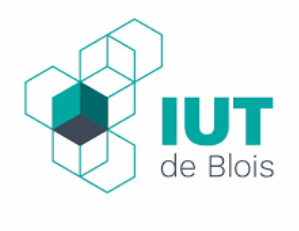
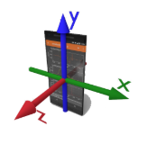
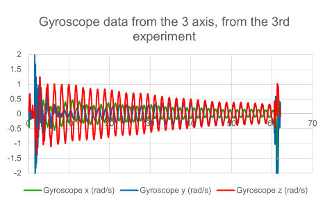
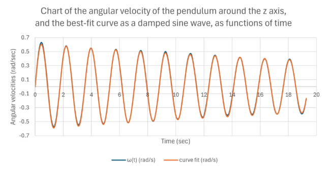
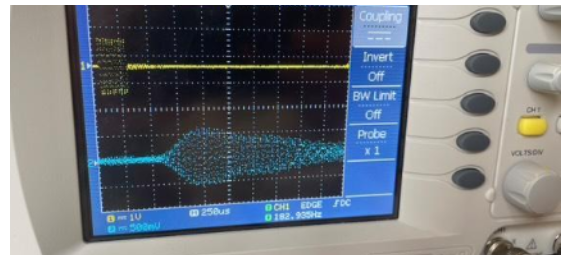
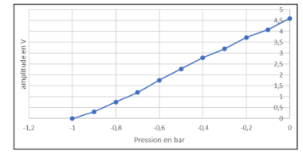
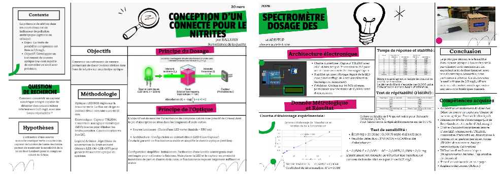
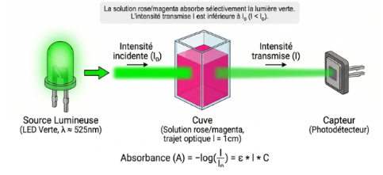
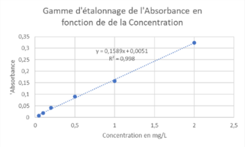
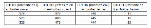

2 0 2 4 — 2 0 2 6
PORTFOLIOJules Balluais
Futur diplômé en BUT Mesures Physiques à l'IUT de Blois. Spécialisé en instrumentation, métrologie et automatisation.
01 — Infos
À propos de moi
Je m'appelle Jules Balluais, étudiant en deuxième année de BUT Mesures Physiques à l'IUT de Blois.
J'ai réalisé de nombreux travaux pratiques autour de la physique, l'instrumentation et la métrologie. Ce portfolio présente une sélection de ces projets et les compétences développées.
Passionné par l'expérimentation et l'analyse de données, je cherche à mettre mes compétences en pratique dans un contexte professionnel stimulant.
Informations
02 — Parcours
Mon parcours
2023
Lycée Balzac — Centre-Val de Loire
Baccalauréat
2024
Université de Poitiers
Licence Sciences pour l'Ingénieur
2026

IUT de Blois
BUT Mesures Physiques
03 — Projets
Mes travaux
Projet 01 · 1ère Année
InstrumentationOscillation d'un Pendule
Étude du mouvement d'un pendule simple via Phyphox. Modélisation par sinusoïde amortie et analyse des données gyroscopiques.
Projet 02 · 1ère Année
AcoustiquePropagation des Ultrasons dans le vide
Étude de la propagation des ultrasons dans différents milieux. Analyse expérimentale des caractéristiques de transmission.
Projet 03 · 2ème Année
Chimie & ÉlectroniqueConcevoir un Spectromètre
Conception d'un spectromètre connecté pour le dosage des nitrites dans la Loire. Chaîne optique LED/TSL2591, loi de Beer-Lambert, programmation Arduino.
Projet 04 · Stage · 2026
Comet Traitements — BelgiqueMachine IA de Reconnaissance des Métaux
Développement d'un protocole de préparation d'échantillons et d'un cahier des charges pour une machine IA de reconnaissance des métaux, en collaboration avec Eagle Vizion (Canada).
Projet 05 · Atelier
Radio Campus ToursProjet Atelier Radio
Émission de 15 minutes en partenariat avec Radio Campus Tours 99.5. Scénarisation, argumentation contradictoire et passage en studio en conditions réelles.
04 — Compétences
Ce que je maîtrise
Mesures & Physique
Logiciels & Outils
Savoir-être
05 — Contact
Me retrouver
N'hésitez pas à me contacter pour toute question ou opportunité.
Message envoyé !
Merci de m'avoir contacté.
Je vous répondrai dans les meilleurs délais.
Projet 01 · 1ère Année · 2024–2025
Oscillation d'un Pendule

Objectif
- Étudier le mouvement d'un pendule simple en enregistrant les vitesses angulaires autour des trois axes à l'aide de l'application Phyphox
- Analyser le comportement dynamique et traiter les données issues de plusieurs oscillations
Timeline du projet
Étude théorique
Étude théorique d'une oscillation d'un pendule
Création d'un Gantt
Planification du projet avec Mindview
Prise de mesure (Test)
Expériences avec le pendule et Phyphox
Exploitation des données
Traitement des données Phyphox dans Excel
Compte-rendu en anglais
Rédaction du rapport final sur Google Doc
Matériel utilisé
- Tube en carton et ficelle (≥ 1 mètre)
- Téléphone avec l'application Phyphox
- Support pour suspendre le pendule


Logiciels utilisés
Phyphox
Acquisition des données gyroscopiques
Excel
Traitement des données & modélisation
Mindview
Planification Gantt
GoogleDoc
Compte-rendu final en anglais
Résultats expérimentaux
En testant le module gyroscopique avant l'expérience, nous savions que la rotation autour de l'axe z serait celle impliquée dans le pendule. Cela a été confirmé en examinant les données : l'axe z présentait la plus grande amplitude.
Nous avons utilisé les données issues de la troisième expérience, qui présentait le graphique le plus clair, réduites à 10 oscillations depuis un point proche de 0.

Analyse des résultats
La sinusoïde amortie est un très bon modèle pour la vitesse angulaire d'un pendule. La valeur expérimentale ω = 3.56 rad/sec est proche de la formule théorique pour ω qui donne 3.67 ± 0.13 rad/sec, et la différence est inférieure à l'incertitude de mesure.
La longueur entre le support et le centre du téléphone était de 73 cm, cette mesure n'étant pas totalement précise car nous ne disposions pas d'un mètre ruban approprié.

Défis relevés
Méthode
Nous avons d'abord essayé sans le tube en papier, mais le nœud n'était pas assez serré — le téléphone oscillait sur plusieurs axes.
Organisation
Le diagramme de Gantt nous a demandé plus d'efforts et de temps que prévu.
Données
Les calculs Excel semblaient erronés pour l'intégrale. Comme discuté avec M. BRUN, l'intégrale est correcte lorsqu'on utilise Python, et le processus pour l'obtenir est également correct.
Compétences développées
Conclusion
Annexes
Compte-rendu en anglais (Google Slides)
Projet 02 · 1ère Année · 2024–2025
Propagation des Ultrasons dans le vide
Objectif
- Étudier la propagation des ultrasons sous vide
- Analyser l'évolution du signal dans le vide
- Répondre à la problématique : Comment les ultrasons se propagent-ils dans le vide ?
Timeline du projet
Étude théorique
Étude théorique sur la propagation des ultrasons dans le vide
Choix des capteurs
Sélection des capteurs ultrasonores MA40S4S et MA40S4R
Montage depuis le support
Conception et assemblage du support métallique dans la cuve à vide
Tests
Mesures de l'amplitude du signal en fonction de la pression
Présentation orale
Présentation des résultats via Canva
Matériel utilisé
- Capteurs ultrasonores — MA40S4S : émetteur 40 kHz / MA40S4R : récepteur 40 kHz
- Support de montage — Support métallique rigide en aluminium, fixation par vis inox, maintenant les deux capteurs alignés face à face
- Connexion — Fils monobrins, platine d'amplification et câblage interne
- Instruments — GBF (40 kHz), alimentation DC ±12V, oscilloscope, multimètre numérique
- Environnement de test — Cuve à vide hermétique (rayon ≈ 6 cm) + pompe à vide jusqu'à −1 bar
Description de l'expérience
Pour mesurer la propagation des ultrasons dans une machine à vide, un support métallique intégrant les deux capteurs (émetteur MA40S4S et récepteur MA40S4R) a été assemblé. Les capteurs ont été soudés à l'aide d'étain et protégés par des gaines pour assurer solidité et étanchéité. Le support a été fixé à l'intérieur d'un cylindre métallique inséré dans la cuve à vide.
Les fils des capteurs ont été connectés à une plaque de prototypage reliée à l'extérieur de la cuve, puis aux instruments de mesure. En diminuant progressivement la pression, nous avons observé sur l'oscilloscope l'évolution du signal ultrasonore en fonction du niveau de vide.

Logiciels utilisés
Canva
Présentation du projet en oral
Kicad
Schématisation du circuit électronique
Organisation et suivi du projet
Word
Rédaction du compte-rendu
Résultats expérimentaux
La pression atmosphérique normale est d'environ 1 bar. Lorsque la pression relative atteint −1 bar, la pression absolue devient proche de 0 bar, correspondant à un vide quasi complet. Dans ces conditions, la transmission des ultrasons devient théoriquement impossible faute de milieu de propagation.
0 V −0.8
0.76 V −0.6
1.78 V −0.4
2.8 V −0.1
4.08 V
Cette courbe montre de façon nette que la propagation de l'onde ultrasonore dépend directement de la pression.


Analyse et discussion
La propagation des ultrasons dépend de la présence d'un milieu matériel, car il s'agit d'une onde mécanique. Les mesures montrent une diminution progressive de l'amplitude du signal lorsque la pression diminue : forte à pression atmosphérique (~4.6 V), elle tend vers zéro à mesure que le vide s'installe.
D'après la loi des gaz parfaits (PV = nRT), la baisse de pression réduit le nombre de particules disponibles pour propager l'onde, expliquant ainsi la disparition du signal lorsque la pression atteint −1 bar. Malgré quelques pertes et réflexions possibles, les résultats valident l'hypothèse.
Compétences développées
Conclusion
Annexes
Compte-rendu Word (PDF)
Présentation orale (Canva)
Projet 03 · 2ème Année · 2025–2026
Concevoir un Spectromètre

Objectif
- Conception d'un instrument de mesure optique pour doser les nitrites dans la Loire
- Transversalité scientifique et technique (optique, chimie, électronique)
- Maîtrise de la métrologie et de la loi de Beer-Lambert
- Gestion de projet en autonomie
- Communication professionnelle et technique (notice en anglais)
Timeline du projet
Connaissance du projet
Prise en main du cahier des charges et recherche bibliographique
Début de conception
Choix des capteurs et des composants techniques
Conception
Développement du prototype électronique, mécanique et chimique
Tests et métrologie
Tests de répétabilité, linéarité, sensibilité et étanchéité optique
Évaluation du prototype
Validation métrologique et ajustements
Évaluation du prototype final
Rendu final et présentation du spectromètre abouti
Principe Optique
L'objectif est de mesurer l'absorbance du complexe coloré rose (réactif de Griess) dont le pic d'absorption se situe dans les longueurs d'onde vertes. La loi de Beer-Lambert relie l'absorbance à la concentration :

Description de la conception
- Principe Électronique — Capteur TSL2591 (ADC 16 bits, communication I2C), LED pilotée par une sortie régulée de l'Arduino. Résolution de 0.0001 unité d'absorbance sur 65 536 niveaux.
- Principe Mécanique — Enceinte opaque assurant une isolation optique de 97 %. Le puits de cuve maintient LED et capteur dans un axe rigoureusement identique.
- Principe Chimique — Dosage des nitrites dans la Loire. Solution mère 100 mg/L, 5 étalons de 0,05 à 2 mg/L. Ajout de 1 mL de réactif de Griess, 15 min de réaction, puis lecture de l'absorbance.


Cahier des charges
Résolution
0,0001 unité d'absorbance
Gamme de mesure
0,05 à 2 mg/L de nitrites
Incertitude cible
Inférieure à 5 % sur toute la gamme
Conditions
Mesure en enceinte fermée, isolation optique totale
Logiciels utilisés
Arduino IDE
Programmation du capteur TSL2591
GoogleWord
Rédaction du compte-rendu final
Excel
Traitement des données & courbe d'étalonnage
Mindview
Planification Gantt
Tests de métrologie
Répétabilité (Fidélité)
Critère de fidelité de 1 % validé pour l'intensité lumineuse (0,28 %). Répétabilité sur l'absorbance : 0,73 %.
Linéarité (Beer-Lambert)
Coefficient de détermination R² ≈ 0,998. La linéarité valide le principe dès 0,04 mg/L.
Sensibilité
Seuil de détection : 0,0015 unité d'absorbance. Détection des nitrites à partir de 0,01 mg/L.
Étanchéité optique
Chute de 97 % de la lumière parasite — l'enceinte opaque est indispensable.
Tests statistiques
Durbin-Watson DW = 2,50 (résidus indépendants) · Shapiro-Wilk p = 0,607 (normalité validée) · Grubbs G < 1,887 (aucune valeur aberrante) · Breusch-Pagan p = 0,45 (variance constante).




Compétences développées
Conclusion
Annexes
Affiche du Projet (Canva)
Mode d'emploi en anglais
Lien à venir…